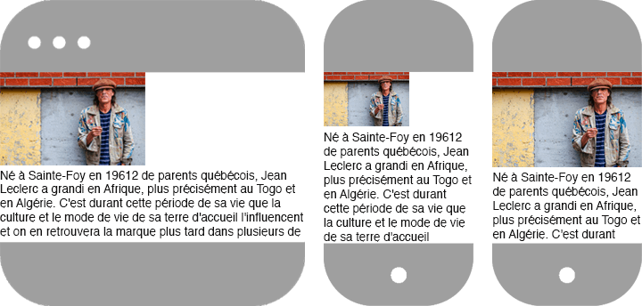
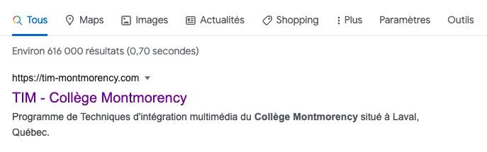

Il existe plusieurs types de balises <meta>. Certaines servent à définir le comportement d'une page, tandis que d'autres permettent de bonifier la page avec certaines informations.
Voyons quelques-unes des balises <meta> les plus communes.
Cette balise définit l'encodage des caractères du document. Autrement dit, les caractères supportés sur une page. De nos jours, la valeur UTF-8 est pratiquement toujours attribuée à cet élément puisqu'elle offre un jeu de caractères universels, incluant la majorité des caractères spéciaux des différentes langues (accents, cédille, etc.).
Par exemple:
Si un plus ancien encodage ne supportant pas les accents était utilisé, comme le ASCII, les mots accentués, tel que: "Québec", afficheraient alors ainsi:
Cette balise spécifie la dimension de référence de la fenêtre (viewport) sur les appareils mobiles 📱. Par défaut, cette balise est généralement initialisée avec les valeurs suivantes:
Width
Dans ce code, la partie width=device-width indique que la largeur de la fenêtre doit correspondre à la largeur de la fenêtre de l'appareil lui-même.
Sans cette valeur, l'appareil mobile tentera de déterminer la largeur du site par lui-même afin de le rendre entièrement visible dans la page, quite à effectuer un zoom arrière ou avant.
Par exemple, voici site contenant une image de 450px de large et un max-width: 100% suivis d'un texte sans largeur de défini. Ce même site est affiché sur desktop à gauche, sur mobile sans viewport au centre et avec un viewport à droite.
L'image étant plus large que le cadre des appareils mobiles (375px) et le texte n'ayant pas de largeur spécifiée, l'affichage variera en fonction de l'absence ou la présence du meta viewport.
Au centre, le navigateur tente de déterminer par lui-même la largeur de fenêtre (viewport) optimale et donc effectue un zoom arrière. Tandis qu'à gauche, la largeur de la fenêtre (viewport) est configurée afin de correspondre à la largeur du cadre de l'appareil. L'image respecte donc sa propriété max-width: 100% afin de prendre une largeur de 375px.
Initial-scale
La partie initial-scale=1 contenu dans la valeur de cette balise indique que la page ne doit pas être agrandie ou réduite au chargement initial de la page. Si désiré, il serait possible d'effectuer un zoom avant grâce à initial-scale=2 ou encore un zoom arrière à l'aide de initial-scale=0.5.
Minimum-scale & maximum-scale
Ces parties permettent de définir le zoom minimal ou maximal permis sur une page.
User-scalable
Lorsque cette partie est présente et qu'elle est définie à no, par exemple user-scalable: no, il est impossible pour l'usager d'agrandir ou de rapetisser la page en utilisant les fonctionnalités de zoom.
La balise <meta name="description"> permet de fournir une brève description d'approximativement 155 caractères qui sera affichée sur les moteurs de recherche et qui sera utilisée par les navigateurs au moment de la création d'un favoris.
Par exemple:
Génèrera l'aperçu suivant sur Google:
La balise <meta name="keywords"> permet de définir des mots-clés associés à la page courante.
Par exemple:
la balise <meta name="langage"> permet de spécifier la langue de la page affichée sous un format ISO 639-1 (2 caractères).
Par exemple pour un site en français:
Comme son nom l'indique, la balise <meta name="copyright"> permet de spécifier que les médias et textes contenus sur une page appartiennent à une personne ou une entité.
Par exemple:
La balise <meta name="author"> permet de donner le crédit à la personne ou la compagnie aillant réaliser une page web.
Par exemple:
La balise <meta name="robots"> permet d'indiquer aux robots d'exploration des moteurs de recherche (Google, Bing, Yahoo) comment une page devrait être indexée.
Voici quelques-unes des valeurs possibles:
- index indexer la page (par défaut, autrement dit, même si ce meta est omis, la page sera indexée).
- noindex ne pas indexer la page.
- nofollow na pas indexer aucun lien.
- noimageindex ne pas indexer les images.
Par exemple: